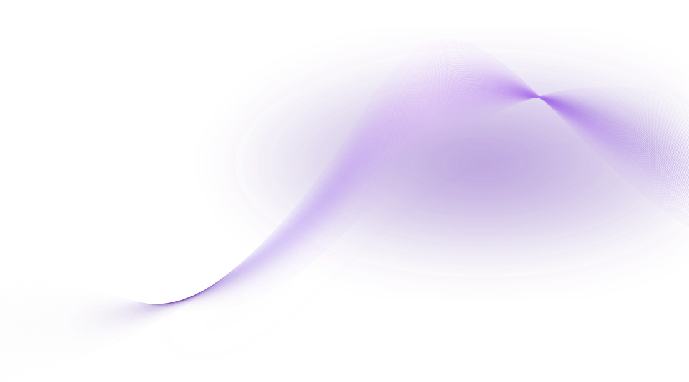
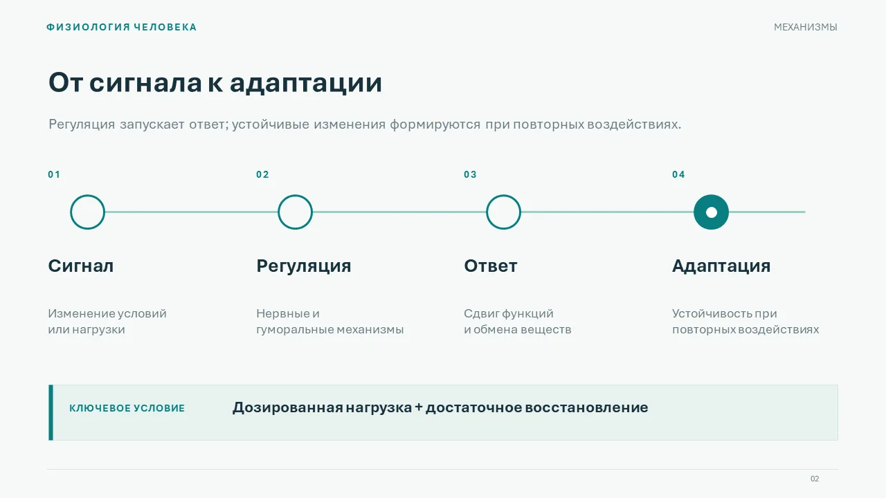

ПРЕЗЕНТАЦИИ НА ЗАКАЗ
Презентации
для учёбы, проектов
и выступлений
Структурно. Визуально. По задаче.
Два формата на выбор
Оба — в PowerPoint (.pptx), но с разной свободой редактирования.
Визуальная
Выразительный дизайнБольше свободы в графике и композиции. Каждый слайд — готовое изображение; отдельный текст не редактируется.
VISUAL
IDEA.
IDEA.
Редактируемая
Удобно обновлятьТекст и основные объекты можно менять самостоятельно. Сложные изображения могут оставаться нераздельными.

Чем именно отличаются форматы? Нужны оба?
В обоих PPTX можно менять порядок слайдов. В визуальном отдельные слова, формулы и графика внутри слайда-картинки не редактируются — изменения потребуют пересборки. В редактируемом варианте основные элементы остаются объектами PowerPoint, но фотографии и часть сложной графики могут быть изображениями.
Нужны две версии? Это можно обсудить, но объём работы и стоимость согласуются отдельно. Визуальный вариант не обязательно красивее для любой задачи.
Пример работы
Учебная · Научная · Редактируемая Физиология человекаАдаптация, утомление и резервные возможности. Учебный демонстрационный проект, не заказ клиента.Посмотреть ещё два слайда
Физиология человекаАдаптация, утомление и резервные возможности. Учебный демонстрационный проект, не заказ клиента.Посмотреть ещё два слайда

Три слайда из одной настоящей демонстрационной презентации. Стиль и состав работы для нового заказа подбираются отдельно.
Как заказать
Всего три шагаБриф
Тема, объём, примеры и пожелания.
Согласование
Стиль, сроки, стоимость и правки.
Готовая работа
Файлы в согласованном формате.
Оформить заявку
Ответ по условиям после просмотра вашего брифа. Отправка бесплатная.
Шаг 01 из 03
Частые вопросы
Вопросы о сроках, правках и исходниках
Если презентация «визуальная», я вообще смогу что-то менять?
Вы сможете переставлять и удалять слайды, заменять картинку целиком, добавлять поверх неё свои объекты PowerPoint. Но текст, таблицы и графика, объединённые в одну картинку, не редактируются отдельно. Их изменение обычно требует новой версии изображения.
Можно ли сделать очень красиво и при этом всё редактировать?
Да, для многих задач. Но некоторые необычные иллюстрации, текстуры, сложные эффекты и изображения останутся нераздельными. Если принципиальна полная редактируемость каждой детали, напишите об этом в брифе — обсудим возможные компромиссы дизайна.
Будут ли точными формулы, диаграммы и научные данные?
Для научных материалов необходимы ваши проверенные данные, формулы и источники. Особенно важно сверять подписи, единицы измерения и формулы на изображениях: сложную графику нельзя автоматически считать достоверной. Уровень предметной проверки и ответственность за окончательное утверждение содержания согласуем отдельно.
Что нужно прислать и можно ли заказать «с нуля»?
Можно прислать готовый текст, структуру, фотографии, цифры, фирменный стиль и примеры дизайна. Если есть только тема, так и укажите: подготовка структуры, поиск информации и написание текста — отдельные задачи, влияющие на сроки и стоимость. Пока материалы передаются ссылками; загрузка файлов в форме не настроена.
Какие правки входят и что с исходниками?
Количество раундов правок, порядок согласования и состав исходных файлов определяются до начала заказа. Изменение ранее согласованной темы, структуры или формата может быть отдельной работой. Не обещаем неограниченные бесплатные правки и передачу рабочих исходников по умолчанию.
От чего зависит цена и можно ли заказать срочно?
От числа слайдов, сложности визуала, объёма подготовки содержания, срочности, необходимой редактируемости, анимации и дополнительных форматов. Укажите желаемую дату и бюджет — обсудим реальную возможность выполнения. Отправка брифа не означает бронирование срока или согласованную цену.
Будет ли PDF и что делать со шрифтами?
При необходимости можно согласовать PDF для удобного просмотра. В редактируемом PPTX отображение зависит от установленных на устройстве шрифтов; при передаче уточним совместимость или альтернативы. Соотношение сторон обычно 16:9, но можно выбрать другой вариант.
Как передаются данные и что происходит после отправки?
Заявка не сохраняется на сайте. Информация формируется в браузере и попадает в Telegram только если вы отправите подготовленное сообщение. Telegram — сторонний сервис; перед отправкой учитывайте его условия. Не включайте в заявку пароли, паспортные данные, медицинские документы и конфиденциальную информацию. Для изменения или удаления информации из переписки обратитесь в чат к исполнителю.
Отправка заявки не означает оплату или подтверждение заказа: стоимость, сроки, число правок и состав файлов согласуются в переписке. Загрузка файлов на этом сайте не предусмотрена.